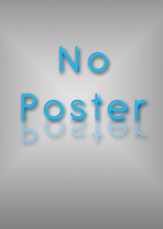

0x1 - Drake and Josh Go Hollywood
0x2 - Merry Christmas Drake and Josh 320p

1x1 - Hug Me, Brother (Pilot)
When Drake uses Josh's secret advice column to impress the hottest girl in school, a case of mistaken identity results in Josh coming face-to-face with a jealous boyfriend.

1x2 - Dune Buggy
Drake and Josh receive an old dune buggy from a friend but are forbidden to use it. When Drake defies his parents and injures himself after crashing the buggy, he tries to hide his injuries, but gets no support from a grounded Josh.

1x3 - Believe Me, Brother
Josh thinks Drake's flirtatious new girlfriend is interested in him too and sets up a sting operation to find out the truth.

1x4 - Two Idiots and a Baby
When Mr. Nichols's boss calls off their dinner plans because of a last minute babysitter cancellation, Josh volunteers his and Drake's services.

1x5 - First Crush
After Drake agrees to help Josh with his girl troubles, Josh finds himself promising to play a birthday song at his crush's party.

1x6 - Grammy
When the parents leave town for the weekend, Drake and Josh's excitement is short lived when they learn that Grammy is coming to stay.

2x1 - The Bet
Drake and Josh make a bet to swear off junk food (Drake) and Video Games (Josh). Megan makes both of them swear to dye their hair pink (whoever loses). When Drake and Josh's mom and dad discover them making a bet, they make a bet as well. When things get crazy, Drake and Josh can't hold onto their bet much longer and decide to break it.

2x2 - Guitar
Drake is so excited when Megan wins a radio contest, and the prize is tickets to the Zero Gravity concert and a guitar signed by Devan Malone, the head guitarist of Zero Gravity. The best part is, Megan lets Drake have the prize! Drake is so obsessed with this guitar. When Josh accidentally sets the guitar on fire, he must come up with a way to replace it before Drake becomes insane forever. Meanwhile, Walter tries to spend quality time with Drake, but everytime Walter tries to go for it, Drake is doing something important.

2x3 - Movie Job
Josh and Drake both get a job at the movie theater. Josh does a bunch of work, but Drake slacks off and gets all the credit. When Drake becomes Josh's boss, Josh is fed up, because he was doing all of Drake's work for him.

2x4 - Football
Drake tries to make Josh cool by telling him to try out for the football team. Instead, Josh gets "murdered" and he ends up being equipment manager, which isn't cool. Later, when the one of the player gets sick by Josh's brownies, the coach depends on Josh to play center. So now Drake must help Josh become cool and at the same time not actually play.

2x5 - Pool Shark
Drake finds out Josh is great at pool or billiards as Josh calls it. Drake bets some kids, and takes advantage of Josh's pool skills and starts hustling people, by taking their money, shoes and other clothing/personal items. Now Josh has made the ultimate bet, and Drake's stuffed in the corner pocket.

2x6 - Smart Girl
Drake meets a smart girl from school named Michelle that he really likes. Now, Drake is not the smartest kid in school, so he gets Josh to teach him things to impress Michelle. But things go too far when he accidentally says yes to an offer of joining the Academic Team. Meanwhile, Josh has had enough with Megan's pranks and tries to get back at her.

2x7 - Little Diva
Ashley Blake is coming to the movie theater for the premiere of her new movie. Helen wants Josh to do everything Ashley tells him. Then Drake helps him in order to get into the afterparty. When Ashley accidentally gets hit in the head with a bucket, the doctor comes and puts Ashley to sleep. Drake and Josh must find a way to get her to the premiere without making it look like she's asleep.

2x8 - Blues Brothers
Josh is confident about when Walter chooses him to be his co-weatherman. That is, until Megan reminds Josh of his uncontrolable twitch. So Josh twitches in front of the whole world and becomes the laughing stock of San Diego. Meanwhile, Drake is determined to win the talent show for the third year in a row but finds it challenging when he rivals with an acappella group.

2x9 - Driver's License
Walter is really excited when his two sons are getting their driver's licenses. He made a rule with his sons, if they get one traffic ticket, he'll take their license away. The problem is, Josh gets his license and Drake doesn't. So when Josh runs a stop sign and gets a ticket, Drake pays for the ticket and doesn't tell Walter. Drake uses this to his advantage and blackmails Josh into driving him to unnecessary places.

2x10 - Number One Fan
An obsessed fan is in love with Drake. She loves him so much, she says she's going to marry him and won't leave Drake a moments peace. So Drake must get this #1 fan to stop embarrassing him and ruining his life. Meanwhile, Josh becomes the new chief of the campfire kids but finds it tricky to deal with kids.

2x11 - The Mean Teacher
Drake has a girlfriend named Kelly who has a laughing problem. He really wants to break up with her, but can't. The reason why is because she is the daughter of Drake's mean teacher, Mrs. Hayfer, who threatens him with summer school if he breaks up with her daughter. Meanwhile, Josh gets a very ugly shirt which he claims as good luck.

2x12 - The Gary Grill
Drake & Josh are approached by two salesmen who offer them a one-time deal, Gary Grills. Drake and Josh quickly become attached to them and sell them acceptionally. But they don't realize that these Grills come with a price.

2x13 - Drew & Jerry
Drake is getting tired of hanging around with Josh all the time. So Josh finds a friend named Drew who looks just like Drake. Drake feels he is being left out because of Drew, so he finds his own friend named Jerry who looks and acts like Josh.

2x14 - Honor Council
Drake is accused of parking Mrs. Hafer's car in the middle of her classroom. Drake and Josh must go in front of the school's Honor Council to prove Drake is innocent.

3x1 - The Drake and Josh Inn
When Audrey and Walter go out of town for spring break they leave Drake, Josh, and Megan at home by themselves. When they are at the Premiere they overhear a couple saying that they don't have a place to stay. Drake and Josh take advantage of this opportunity and say that their vacant house is a hotel. Meanwhile, Megan is attempting to get Drake and Josh to treat her like a guest.

3x2 - Peruvian Puff Pepper
Drake and Josh enter a salsa contest so they can win a 45 inch high depth Yatzubishi plasma screen TV. But they won't let Megan join their team, so she decides to play dirty. After she gets the boys in trouble twice and she makes her own salsa, she buys the ultimate target for Drake and Josh. The Peruvian Puff Pepper.

3x3 - We're Married?
Josh's e-pal, Yooka, is coming from Yudonia to visit Josh. Drake doesn't care about her at first, but then he sees how hot she is. Josh overhears Yooka telling her parents she is homesick, so he arranges what he thinks is a friendship ceremony but is really a marriage ceremony.

3x4 - Mindy's Back
It's the time for the Science Fair. Josh is confident that he'll win first prize, until Mindy Crenshaw returns! Josh comes in second like every year, but he turns out to have a change of heart. After the Science Fair, he develops a liking of Mindy who also has a liking of him. Right before they know it, they're boyfriend and girlfriend!

3x5 - The Affair
When Walter is always coming home late and talking to another woman, Drake and Josh believe Walter is cheating on Audrey and they start snooping. Drake and Josh try all types of plans to keep them together.

3x6 - Playing the Field
Drake's "friend" Tori, who he has been dating for a while, calls him her boyfriend. Drake breaks up with her, because he thinks they both should see new people. Meanwhile, Josh grows a mustache and is determined to make Mindy kiss him again.
3x7 - Helen's Surgery
After Helen has eye surgery she asks Drake and Josh to help her around her house. When Drake sees that she has a hot tub, a plasma screen TV, and a dancing machine, he takes advantage of Helen's blindness to use all her cool stuff.

3x8 - Paging Dr. Drake
When Josh recieves a foot injury, his parents take him to the hospital. While at the hospital, Drake poses as a doctor to impress a bunch of nurses. Then another doctor comes in and thinks he is a famous doctor. Because of this, he has to perform a foot surgery. How can Drake escape without being revealed of breaking the law?

3x9 - The Foam Finger
When Drake and Josh remember they got in a fight several years ago at a San Diego Padres game, they realize they fought each other. Then they spend the next few days fighting over who started the fight.

3x10 - Girl Power
Mindy invites Josh over to her house for dinner and to meet her parents, but things don't go well. Josh hosts another dinner at his house to try and impress Mindy's parents to make up for last time. He asks Drake to not mess up his date. Meanwhile Drake and his new girlfriend, Lucy, wrestle to see who is tougher, to prove that some girls are tougher than boys.

3x11 - Sheep Thrills
Megan buys a pregnant sheep and makes Drake and Josh take care of it, if Megan Promises to not pull any pranks on Drake and Josh for awhile. But when they see what a pregnant sheep can do, they don't want it much anymore.

3x12 - Megan's New Teacher
Josh nabs a student teaching job in Megan’s classroom where Drake discovers an amazing kid drummer. But when the class revolts against teen taskmaster Josh, Drake rushes in to help Megan discredit him -- perchance to snare the drummer for his band.

3x13 - Little Sibling
To keep from being sent to remedial English, Drake agrees to mentor a little kid named Sammy. Unfortunately, Sammy would rather hang out with Josh.

3x14 - Theater Thug
Josh gets a part on a TV crime show where he plays the infamous "Theater Thug." Following his TV debut he becomes a public enemy as a case of mistaken identity gets out of hand.

3x15 - The Demonator
A new roller coaster is coming out called, the Demonator. Drake and Josh want to be there the first day it opens. But when they get in line, their wild adventure starts.

3x16 - Alien Invasion
Drake and Josh decide to turn the tables and prank little Megan. She actually believes that aliens are coming down to Earth and they are going to kidnap her. But at the end, Drake and Josh find that this may not go as they hoped.

3x17 - Dr. Phyllis Show
Drake and Josh go on the Dr. Phyliss Show and relive some of their most outlandish moments. Some will jab at your funny bone, while others will tug on your heart strings.

4x1 - Josh Runs Into Oprah
Josh is jazzed at the prospect of meeting his TV idol when Drake gets tickets to “Oprah” for his birthday, but delight turns to dismay in the studio parking lot.

4x2 - Vicious Tiberius
Mrs. Hayfer needs a house sitter for the weekend and it's the boys to the rescue, but all doesn't go according to plan when they meet Tiberius, a vicious dog with an appetite for… Drake and Josh?! Walter is exercising for the mile run against another weather man.

4x3 - The Wedding
Drake and Josh are on their way to a family wedding in their car. Unexpectedly and in the middle of nowhere, the car breaks down. This wouldn't be much of a problem, if it weren't for the fact that they're the ones bringing the cake to the reception.

4x4 - Mindy Loves Josh
Mindy tells Josh that she loves him and Josh slams the door in her face and runs to Drake, but Drake tells Josh that she is just trying to distract him so she can win the Science Fair.

4x5 - Who's Got Game
Drake teases Josh that he can't get girls. So, Drake and Josh make a bet to see how many girls each of them can date in just one week. The rules are, every date must last at least one hour, you can't date someone you already know, and you can't date the same person twice.

4x6 - The Great Doheny
Drake and Josh meet, "The Great Doheny", and find out that he relies on his new friends a little too much because he has lost everything including his career. In an attempt to get his career back for him, Drake and Josh find themselves in a tough situation.

4x7 - I Love Sushi
Drake and Josh enter a "Pump My Room" contest to try and redecorate the living room as an anniversary gift for their parents. When they come back to the house they realize that everything is gone. To get the furniture and everything else back, Drake and Josh get a job at a sushi factory, but come home to see that everything is back.

4x8 - The Storm
The whole gang has gathered at Drake and Josh's house before Drake's big concert, but thanks to Walter's poor weather predictions they end up stuck in the house due to severe rain. Sure, it's raining outside, but the real storm for Drake to weather is when his new girlfriend meets his exes.

4x9 - My Dinner With Bobo
The boys are tired of sharing a ride and get money to buy a car, but all goes bananas when Drake buys an orangutan named Bobo instead. Soon they think they can make some money off their new friend, but things get hairy when they find out the man who purchased him may be an evil Doctor with unique.

4x10 - Treehouse
Drake, Josh, and Megan must rebuild a tree house that they accidentally destroyed

4x11 - Josh Is Done
Drake has taken advantage of Josh for the last time and Josh decides that he is done dealing with Drake. Drake says he's fine with this, but when Josh's life improves and Drake's goes down the drain this rocker begins crooning a different tune.

4x12 - Eric Punches Drake
After accidentally punching Drake in school, Eric becomes very popular. Meanwhile, Josh thinks that Mindy has a new boyfriend.

4x13 - Megan's Revenge
Drake and Josh accidentally kill Megan's hamster and they think she is planning revenge.

4x14 - Steered Straight
After the boys get in trouble for using Fake ID's Audrey and Walter fear they will fall to a life of crime and sign them up for a “Steered Straight” program, but things start skidding out-of-control when a real criminal befriends them.

4x15 - Megan's First Kiss
Megan's been extremely secretive and Drake and Josh investigate to find out what she's up to. The clues lead to a new boyfriend and all seems wonderful until they find out Megan's new beau may be trouble.

4x16 - The Battle of Panthatar
The most popular kid in school is throwing what may be the greatest sixteenth party ever, but Drake and Josh may be having cake for two after they get banned from the party.
4x17 - Really Big Shrimp (1)
It's the end of an era. After Josh ruins Drake's chances at having a hit song in the Superbowl, the boys must find a way to make things right.
4x18 - Really Big Shrimp (2)
It's the end of an era. After Josh ruins Drake's chances at having a hit song in the Superbowl, the boys must find a way to make things right.

4x19 - Helicopter
Drake wins a free skydive off a helicopter and sets off to do it despite his parents' wishes. Josh, being the good brother he is, tries to stop him, but ends up going along for the ride. This fun time in the sky becomes a true downer when they accidentally lose their pilot and things start spinning out of control.

4x20 - Dance Contest
Josh decides to enter a local dance contest, but when Drake realizes he's going to fail gym, he has to enter in order to receive high school credit. So he steals Josh's dance partner, and that's when things start to go wrong.